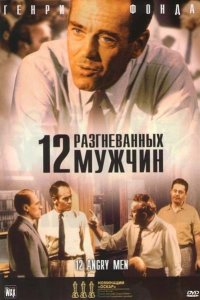

Операция «Фортуна»: Искусство побеждать
Операция «Фортуна»: Искусство побеждать Мой ужасный сосед
Мой ужасный сосед Черный ящик
Черный ящик Аферисты
Аферисты Крушение
Крушение Вавилон
Вавилон Чёрная Пантера: Ваканда навеки
Чёрная Пантера: Ваканда навеки



название
12 разгневанных мужчин
год
страна
время
1 час 36 мин
просмотр
режиссер
в главных ролях
Про фильм
Криминальная драма «12 разгневанных мужчин» повествует о судебном деле в котором мнение одного из присяжных кардинально меняло систему обвинения. Молодого парня, латиноамериканского происхождения обвиняют в убийстве своего отца. Двенадцать присяжных должны вынести вердикт преступнику.
Все улики доказывают виновность подсудимого, но один из присяжных не уверен в виновности парня. Он вступает в разногласия с коллегами и системой, как таковой. Драматические события, происходящие между присяжными в конце концов приводит к обоюдному решению, но какому?
Это нужно смотреть! Художественный фильм «12 разгневанных мужчин», был снят в 1957 году и до сих пор является одной из лучших драмой о судебном деле. © ГидОнлайн
Смотреть онлайн
Расскажи друзьям
Название
В оригинале
 Мечтатели
Мечтатели Час пик
Час пик 7 секунд
7 секунд Комментирование этого фильма доступно
Комментирование этого фильма доступно 
Фильм удивил
Отличный фильм! В отличие от этого фильма, в современном мире люди любят не вдобаться в подробности осуждая кого либо. Советую к просмотру
интересный фильм

Третий раз пересматриваю. Эти люди делали важное дело, может самое важное в своей жизни дело, для чего и на свет родились. 10 как то мало для такого фильма!
Шедевр. Доказательства того, как часто мы ошибаемся опираясь только на поверхность.
Шедевр !!!Фильм на все времена 10/10
Только после того, как наш «12″ посмотришь, можно для галочки ознакомитьсяс оригиналом
понравился больше чем «12″, потому что ничего лишнего в это фильме нет
Гениален! 10/10
Сразу скажу что осилил этот фильм не за один раз. Вчера оставил развязку на потом. Только что досмотрел, и скажу вам что мне понравился фильм, действительно сделан словно вчера. В фильме снимаются ровесники моей бабушки, тем не менее лишь черно-белое видео это выдает.
Очень хорошо показаны характеры присяжных. И в наше время люди которые сомневаются не хотят сами искать ответ, а лишь принимают сторону большинства. Это неправильно, но сейчас о кино. Наверное единственное чего мне не хватило в этом фильме, так это реакции мальчика после его оправдания. Не уверен, но считаю что у многих пошли бы слёзы в этот момент. Следовательно моя оценка 9/10, отличное кино.
10 из 10.
Больше мне добавить нечего.
очень давно, мне понравился фильм михалкова, за столь интересную и оригинальную идею. Теперь я понимаю что он не более чем почти покадрово сплагиатил все. А оригинальный фильм очень хорош!!
отличный фильм!ему 60 лет,а по ощущению он снят вчера!такое же заседание могло быть и год назад,и десять лет назад,а может быть и завтра!фильм на все времена! 10/10
10/10
Думал смотреть фильм или нет, так как не особо смотрю старые фильмы, тем более 50-60х годов. Но посмотрел не зря, не жалею что глянул.
Это прекрасный фильм,в котором наглядно показано,чего может добиться человек,старающийся поставить себя на место другого,а не думающий только о себе.К просмотру особенно в России обязателен,его надо по 3 раза в день на всех каналах крутить вместо массовой дезинформации.10,поставил бы и больше.
Я не уверен, что этот фильм 10 из 10. Черно-белая картинка, затянутая середина, однообразные планы. Возможно я не прав, но все мы тут собрались не для того чтобы просто так давать оценку 10 из 10. Я считаю, что в каждой картине есть недостатки. Поставив себя на место создателя этого фильма, я нахожу места которые мог бы доработать. Не исключено, что я ошибаюсь и все, кто здесь комментируют правы, однако…
Очень сильный, динамичный фильм. Действительно, забываешь, что он был снят так давно, даже не обращаешь внимания на то, что он чёрно-белый, очень захватывает сюжет, все герои такие яркие, актёрская игра потрясающая. Режиссёрский ход довольно необычный, что всё действие не поделено на промежутки, происходит одним временным пластом в одном замкнутом помещении, где герои остаются только со своими убеждениями. Потрясающе. Рекомендую
когда смотришь фильм и забываешь что он прошлого столетия , а на протяжении всей картины ты, затаив дыхание, слушаешь диалоги актеров – это ли не есть шедевр каждый из присяжных- своеобразный человек со своими стереотипами, психотипы у всех разные , в этом то и соль ,наблюдать за внутренними и внешними конфликтами героев, доводами о невиновности подсудимого
каждый из присяжных- своеобразный человек со своими стереотипами, психотипы у всех разные , в этом то и соль ,наблюдать за внутренними и внешними конфликтами героев, доводами о невиновности подсудимого  фильм однозначно сильный
фильм однозначно сильный 
Посоветовала одна знакомая,за что ей очень благодарен.
Фильм действительно очень интересный,не мастер кинокритики,но могу сказать одно,я забыл что это ч/б фильм и он 1957,думаю этим все сказано.
10/10
Ваааау! Выдохнула с титрами))) 10/10. Интересно, что в кадре практически весь фильм одновременно 12 человек и каждый делает своё дело. А в современных фильмах сколько движения? 2, 3, а если больше, то фокус внимания все равно на пару, не больше, остальные заполняют пространство. Дааа…))
Отличная игра актёров . Вообще никак не ощущается , что кино 1967 года. Добротный продукт. Моё почтение! 10/10
Прекрасный фильм.Те кто еще не видел-советую к просмотру.
Один из самых умных и важных фильмов всех времён и народов. Не зря этот фильм находится на 6-ой строчке в списке лучших фильмов на сайте Imdb. Этому фильму я ставлю все 10 из возможных 10-и.